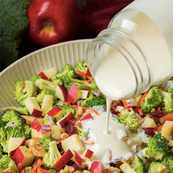

Eat out and still lose weight
 Healthy Eating Tips.
When eating out at a restaurant the choices can be endless and may difficult to navigate through the danger zones, eating what you love, and staying healthy. Below is a few tips to help you through those impromptu dinner meeting, dinner with family or friends, or the option when you haven’t prepared anything at home….it’s okay, it happens!
Dining Out
Going out to dinner tonight? You've got plenty of company. Almost 75 percent of us eat at a restaurant at least once a week, and 25 percent dine out every two or three days, according to a study by the USDA. And hey, why not? Letting someone else cook is relaxing — the perfect treat after a busy day. Trouble is, a recent study at the University of Texas found that female dieters consume an extra 253 calories and 16 fat grams on the days that they eat at restaurants. Portion sizes have increased in recent years — and most of us tend to polish off every bite. No matter how big the serving size you canhappily order off any menu and drop pounds — or maintain a healthy weight — without depriving yourself. Just follow the easy, carry-it-with-you guide.
Healthy Eating Tips
You've booked a big dinner, so you skip lunch. Sound familiar? Don't. By the time you arrive at the restaurant you're famished, and hello — here's the bread basket! Two or three pieces later (with butter, of course), you've inhaled a couple hundred calories — and you haven't even spoken to the waiter.
From now on, ditch the starve-yourself-all-day routine. Instead, eat a light lunch, such as a salad with chicken and veggies and a whole-grain roll. Then in the late afternoon, have a small snack — a container of low-fat yogurt, a handful of almonds (about one ounce), or a cube of low-fat cheese. Keeping your hunger under control means you won't dive into the bread basket the moment you're shown to your table.
Go easy on the wine.
If you want a glass of pinot noir, by all means have it. Just don't go overboard. One study found that women who indulged in more than two drinks a day consumed nearly 30 percent more calories. Stick to one glass of wine — which is what the American Medical Association advises as best for your health.
Beware of dishes labeled "light."
More and more restaurants are promoting low-cal, good-for-you choices — and we love that! — but unfortunately, the claim isn't always true. Case in point: One so-called healthy dish we recently saw on a chain-restaurant menu was a large steak covered with gorgonzola cheese, and vegetables cooked in butter. The waitress explained that it qualified as a "spa" selection because it was low in carbs. Yes, but it was loaded with artery-clogging saturated fat and calories! Read the menu carefully. Look for a balance of lean protein (fish, chicken breast, pork tenderloin, strip steak), complex carbohydrates (brown rice, whole wheat pasta) and monounsaturated fats (canola or olive oil). If you want more information to help you choose the healthiest meals, go to the restaurant's Web site ahead of time to see if they list nutritional information for each dish.
Practice portion control.
Eat three-quarters of what's on your plate and then stop. According to James Hill, PhD, director of the Center for Human Nutrition at the University of Colorado, this one simple step can easily shave up to 300 calories off your meal. What's more, you'll be so satisfied from eating 75 percent of your dinner that you'll barely miss those extra few bites.
Be smart about salad.
At the salad bar, fill your plate with veggies, greens, chickpeas, and edamame, and top it with one or two tablespoons of low-fat dressing. Limit the bacon bits, cheese, croutons, and creamy dressings — or skip them entirely. Ditto for pasta, tuna, or chicken salads swimming in mayo. If you can't resist, serve yourself just a quarter-cup serving.
Pick the best protein.
Gotta have a steak? A 10-ounce rib-eye can pack 780 calories or more. Instead, order leaner cuts of beef, such as tenderloin, flank steak, or strip. The recommended serving size is approximately 5 ounces (about the size of the palm of your hand). If the restaurant doesn't offer one that small, cut your portion in half and take the rest home.
More Healthy Eating Tips
Don't be afraid to ask.
Restaurants will honor all kinds of special requests — all you have to do is speak up. Order your food grilled, baked, broiled, poached, or steamed instead of fried. Ask for dishes to be cooked with a little olive oil instead of butter. Request extra veggies — and less pasta — in your pasta primavera.
Get more for less.
So many people get stuck on the notion that they have to eat an entree. Says who? Order two appetizers instead and you'll sample twice the food but eat less overall. Or have one appetizer and share a main course with a friend.
Make healthy swaps.
Choose whole grains such as brown rice or whole-grain bread over refined white bread and rice. Pass up the French fries and the cheese-stuffed potato and order two vegetables, steamed, or a salad and vegetables. Instead of creamy pasta dishes, opt for those with tomato sauces, which are generally lower in fat and calories.
Eat dessert.
We're not kidding. Try to deny yourself the chocolate souffle that sounds so scrumptious and you just might chow down on something worse — like an entire carton of ice cream — when you get home. The smart girl's strategy: Order one dessert for the table. A few bites should satisfy your sweet tooth. Not in the mood to share? Ask for a dish of berries or a small fruit sorbet.
Smart Choices
Make Smart Choices at Your Favorite Restaurants
Fast food
Choose: Grilled chicken or fish. Ask for the sauce separately and use just one tablespoon. Instead of fries, order a green salad with the dressing on the side.
Not: Deep-fried foods. There are so many other healthy choices now!
Coffee bar
Choose: An 8-ounce coffee with milk; 11 calories
Not: A 20-ounce latte; 340 calories
Mexican
Choose: Fajitas made with grilled meats and vegetables, burritos or enchiladas filled with chicken, shrimp, or lean meat and a small amount of cheese
Not: Dishes smothered with cheese, fried chimichangas, refried beans, large bowls of tortilla chips (a few with salsa is fine), pitchers of margaritas (limit yourself to one for 170 calories)
Japanese
Choose: Sushi made with shrimp, tuna, tofu, or vegetables, sashimi, miso soup, teppanyaki dishes (meat, fish, or vegetables cooked on an iron griddle)
Not: Tempura, large platters of sushi rolls (each can be 250 calories or more, and you can easily eat two or three), teriyaki (the sauce can contain a lot of sugar)
Chinese
Choose: Stir-fried shrimp, chicken and vegetables, steamed brown rice
Not: Dishes with thick sweet-and-sour sauces like Kung Pao chicken, large bowls of rice, fried egg rolls, lo mein, breaded or deep-fried foods such as orange beef
Indian
Choose: Tandoori chicken or other foods cooked in a tandoor oven; look for "tikka" or "bhuna" dishes, which aren't covered with heavy sauces
Not: Dishes that come with creamy sauces, naan (Indian breads that are often stuffed with potatoes or coconut and topped with butter), deep-fried samosas
Italian
Choose: Vegetable or seafood antipasto, minestrone soup, fish or chicken dishes served with vegetables, grilled meats
Not: Deep-fried and breaded foods such as veal or eggplant parmesan, creamy sauces such as fettuccine Alfredo, dishes stuffed with cheese such as manicotti and calzones
Calorie Intake
How Many Calories Should You Eat?
It depends. If you're trying to lose weight, aim for about 1,400 to 1,500 a day. To maintain your weight, consume about 2,000 calories if you're moderately active — which works out to about 500 calories per meal, plus two small snacks. Don't skip meals — eating regularly keeps your metabolism humming. And try to exercise at least 20 to 30 minutes a day. (For great 20-minute workout ideas, check out Editor-in-Chief Denise Brodey's 20-minute miracle blog.) It doesn't have to be all at once; little bursts of activity count. So take the stairs instead of the elevator at work, and go for a 15-minute walk at lunch. To find out exactly how many calories you need, check out our caloric needs calculator. To determine what your portion sizes should be,.
Weight loss is a constant day to day struggle for some so some tips to help you are:
- Set Goals
- Stay Focused….make good decisions and think about how you feel when you eat unhealthy food and think about how you feel when you eat better and your clothes start to feel and look better.
- Take time for you, prepare meals, get out for a walk, you don’t need an hour at the gym but simply 20 min of some form of activity
- Never Give Up!!